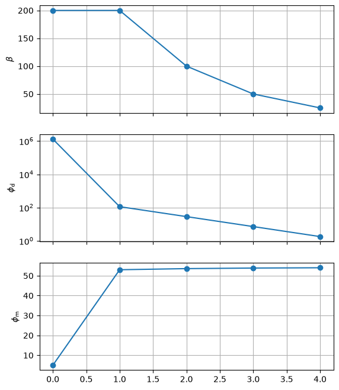

The Inversion class#
Writing full inversions using for loops -like we’ve seen in Beta-cooling schedule- could be cumbersome.
An alternative would be to pack the whole inversion process into a single inversion_ideas.Inversion object.
Such objects will group together all the pieces required to run the inversion, and provide an easy way to run all iterations, either through the run() method, or by iterating over it.
In order to define any Inversion object we need the following pieces:
the objective function we’ll minimize (in its initial stage),
an initial model from which the inversion will start,
the minimizer we’ll use in each iteration, and
a stopping criterion that the inversion use to decide if it should finish or continue.
We can optionally pass a set of directives: these are functions that will be called after each iteration. We can use these directives to modify the objective function and update hyperparameters, like cooling down the trade-off parameter.
For example, an Inversion object can be defined as:
inversion = ii.Inversion(
phi,
initial_model,
minimizer=minimizer,
directives=directives,
stopping_criterion=stopping_criterion,
)
Once defined, we can run the Inversion through the run() method:
inverted_model = inversion.run()
Or we can iterate over it:
for model in inversion:
# Print information
print(f"model: {model}")
print(f"chi factor: {data_misfit.chi_factor(model)}")
# Plot results
...
# Save stuff to disk
...
This allows us to easily insert any custom code in between iterations.
The for loop will finish once the stopping_criterion has been met.
Hint
The model variable will store the inverted model for each one of the
iterations in the inversion. The inverted model will be the last value of it.
In general, the Inversion will perform the following
tasks per iteration:
Check if the stopping condition is met and finish the process if that’s the case.
Minimize the objective function and update its
modelattribute.Call each one of the functions in the
directiveslist.
Beta-cooling with Inversion#
Let’s define an Inversion object that implements the same beta-cooling schedule we’ve seen in Beta-cooling schedule.
Let’s start by defining our objective function with a CooledMultiplier as our trade-off parameter:
beta = ii.hyperparams.CooledMultiplier(200.0, cooling_factor=2.0)
phi = data_misfit + beta * smallness
phi
And the remaining pieces to build our inversion:
# Define a stopping criterion
chi_target = ii.conditions.ChiTarget(data_misfit, chi_target=1.0)
# Define an initial model
initial_model = np.ones(data_misfit.n_params)
Finally, let’s create our Inversion object. We’ll add the beta() method of beta as the sole directive for this
# Define the inversion
inversion = ii.Inversion(
phi,
initial_model,
minimizer=ii.minimize.conjugate_gradient,
directives=[beta.update],
stopping_criterion=chi_target,
)
We can run it using the run() method:
inverted_model = inversion.run()
Alternatively, we can iterate over the Inversion object, and insert some custom code in between iterations:
# Define objective function
beta = ii.hyperparams.CooledMultiplier(200.0, cooling_factor=2.0)
phi = data_misfit + beta * smallness
# Define a stopping criterion
chi_target = ii.conditions.ChiTarget(data_misfit, chi_target=1.0)
# Define an initial model
initial_model = np.ones(data_misfit.n_params)
# Define the inversion
inversion = ii.Inversion(
phi,
initial_model,
minimizer=ii.minimize.conjugate_gradient,
directives=[beta.update],
stopping_criterion=chi_target,
)
# Iterate over the inversion.
# The inversion will return the inverted model obtained after each iteration.
for model in inversion:
# Print information
print(f"model: {model}")
print(f"chi factor: {data_misfit.chi_factor(model)}")
model: [1. 1. 1. 1. 1.]
chi factor: 435105.55441891757
model: [-5.16015904 1.69081292 -2.25382391 4.00541648 1.54686684]
chi factor: 37.723368524111144
model: [-5.18497886 1.71345053 -2.26068489 4.02679262 1.55576705]
chi factor: 9.54617616869457
model: [-5.19748988 1.72495586 -2.26412826 4.03756252 1.56027817]
chi factor: 2.4011920329082956
model: [-5.20377095 1.73075601 -2.26585317 4.04296808 1.56254929]
chi factor: 0.6021437352887581
The inversion log#
The Inversion keep by default an inversion log
through which we can access to some details about the whole inversion process,
both during the inversion is running and after the inversion has finished.
inversion.log.table
┏━━━━━━━━━━━┳━━━━━━━━━━┳━━━━━━━━━━┳━━━━━━━━━━┳━━━━━━━━━━┳━━━━━━━━━━┳━━━━━━━━━━┓ ┃ Iteration ┃ β ┃ φ_d ┃ φ_m ┃ β φ_m ┃ φ ┃ χ ┃ ┡━━━━━━━━━━━╇━━━━━━━━━━╇━━━━━━━━━━╇━━━━━━━━━━╇━━━━━━━━━━╇━━━━━━━━━━╇━━━━━━━━━━┩ │ 0 │ 2.00e+02 │ 1.31e+06 │ 5.00e+00 │ 1.00e+03 │ 1.31e+06 │ 4.35e+05 │ │ 1 │ 2.00e+02 │ 1.13e+02 │ 5.30e+01 │ 1.06e+04 │ 1.07e+04 │ 3.77e+01 │ │ 2 │ 1.00e+02 │ 2.86e+01 │ 5.36e+01 │ 5.36e+03 │ 5.39e+03 │ 9.55e+00 │ │ 3 │ 5.00e+01 │ 7.20e+00 │ 5.39e+01 │ 2.69e+03 │ 2.70e+03 │ 2.40e+00 │ │ 4 │ 2.50e+01 │ 1.81e+00 │ 5.40e+01 │ 1.35e+03 │ 1.35e+03 │ 6.02e-01 │ └───────────┴──────────┴──────────┴──────────┴──────────┴──────────┴──────────┘
We can convert it to a pandas.DataFrame:
df = inversion.log.to_pandas()
df
| beta | phi_d | phi_m | beta * phi_m | phi | chi | |
|---|---|---|---|---|---|---|
| iter | ||||||
| 0 | 200.0 | 1.305317e+06 | 5.000000 | 1000.000000 | 1.306317e+06 | 435105.554419 |
| 1 | 200.0 | 1.131701e+02 | 53.001970 | 10600.394017 | 1.071356e+04 | 37.723369 |
| 2 | 100.0 | 2.863853e+01 | 53.566085 | 5356.608450 | 5.385247e+03 | 9.546176 |
| 3 | 50.0 | 7.203576e+00 | 53.852030 | 2692.601478 | 2.699805e+03 | 2.401192 |
| 4 | 25.0 | 1.806431e+00 | 53.995990 | 1349.899756 | 1.351706e+03 | 0.602144 |
And use it to generate some convergence plots:
import matplotlib.pyplot as plt
fig, (ax1, ax2, ax3) = plt.subplots(nrows=3, ncols=1, sharex=True, figsize=(6.4, 8))
ax1.plot(df.index, df.beta, "-o")
ax1.set_ylabel(r"$\beta$")
ax2.plot(df.index, df.phi_d, "-o")
ax2.set_yscale("log")
ax2.set_ylabel(r"$\phi_\text{d}$")
ax3.plot(df.index, df.phi_m, "-o")
ax3.set_ylabel(r"$\phi_\text{m}$")
for ax in (ax1, ax2, ax3):
ax.grid(True)
plt.show()

Hint
We can also access the inverted model for each iteration through the
models attribute. Models will be cached
if the cache_models argument is set to True when intantiating the
Inversion object.
inversion.models
[array([1., 1., 1., 1., 1.]),
array([-5.16015904, 1.69081292, -2.25382391, 4.00541648, 1.54686684]),
array([-5.18497886, 1.71345053, -2.26068489, 4.02679262, 1.55576705]),
array([-5.19748988, 1.72495586, -2.26412826, 4.03756252, 1.56027817]),
array([-5.20377095, 1.73075601, -2.26585317, 4.04296808, 1.56254929])]